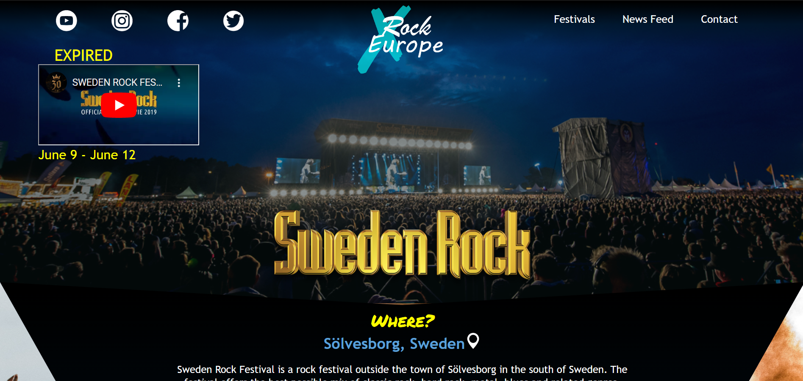
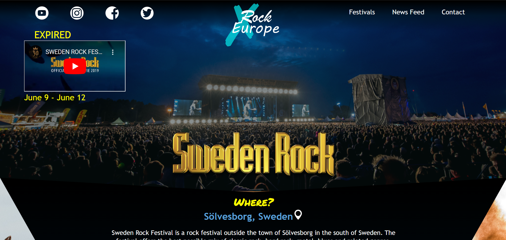

Introduction to Web Development Project [Click to preview]
HTML5 | CSS3 | JavaScript
 

The home page, news feed page and contact page are functional to preview. Shown above is one of the festival pages I produced. This project was made as part of my first year at University. With previous knowledge of HTML, CSS and JavaScript from high school, I decided it would be a fun idea to go all out for this project. The description of the project was to build a website with at least 7 pages about music festivals with a variety of basic HTML, CSS, JS, image, video, and sound requirements.
Going all out I decided to make a festival information page about 4 of the festivals that Europe provides. I came up with the idea of a company called Rock Across Europe and designed their logo and colours. This company would display their favourite festival picks each year and provide information to invite newcomers to the music. With the use of CSS3 techniques I created a distinguishable look for the company with the goal of keeping the readers interested whilst playing around with layouts. With the use of JavaScript I created a image gallery on the homepage and countdown to the date of the festivals the coming year on each festival page (which has now expired as this was done 2020). Additionally, on the news page, I implemented a toggle function for switching between the “news feed” and “podcast episodes”.
I start designing projects by drawing stamp size sketches to build an overview of the content and my ideas. Drawing small means I can quickly draw up several sketches of all my ideas and then compare and review the layouts, as seen above in the second image. These sketches eventually get a little bigger and more complex until they're remade using a software tool to build wireframes. These wireframes are the most detailed until the start of the programming. For this particular project, in the wireframe seen above, I used images I knew I wanted on my website to see them interact with each other. The countdown was also originally different but due to coming across trailers made by the festivals, I changed the location to include the YouTube video and grouping those elements together.
Space Game - Group project
Android Studio | Java

Each team member was responsible for one class and throughout the project we held a presentation of our intended functionality and eventually showcased our game. The second image show our design idea and the first image is how the game turned out.
I was responsible for the red aliens' movement and functionality. Wanting to challenge myself, I developed the idea of the aliens attacking the player. The attack functionality is shown in the 3rd image. The alien would be bouncing back and forth until it randomly starts moving down towards the player. If the alien and player survives the attack, the alien would be spawned back from the top of the screen and keep bouncing until another attack. A timer was set to stop the attack when the alien was back at is original y-coordinate. I also designed the look of the red and green aliens and provided the movement for the enemy ship at the top. Code was provided for the player spaceship at the bottom. Below is a technical description of the class and the code I worked on:
| Class | Description |
|---|---|
| Red Aliens | SpaceGameView.java
Initialise 2 red aliens that move across the screen. Using the initial declared y and x locations for the first alien, which is declared in the RedAlien class. Having created set-methods, for y and x, to allow the second alien to be placed in a different location from the first one. This is performed in the initLevel() function. In the update() function, a set of functions are provided for the main movement of the alien. These are referenced using the class object and located in the class. Methods such as attack() and checkBorderCollision(). These will be described below. Along with these methods, the update frames/second is also used here. These functions are encapsulated in an if-statement which is dependent on the visibility of the object. A bullet collision function is also provided, increasing the score if the alien object and the bullet object collide. The two aliens are then drawn onto the screen in the draw() function, using the bitmap provided in the class file. RedAliens.java Constructor assumes the parameters values onto the class attributes and creates the class object. update() takes the parameter of frames/second and updates the movement of the object every second. Possibility of the objects movement is: LEFT, RIGHT and DOWN. checkBorderCollisions() detects when the object reaches the end of the screen which puts the reverse() method into action. This method changes the direction of the object’s movement, making it bounce back across the screen. The attack() method generates a random number between 1 and 1000 using the imported java.util.Random class. A predesignated number has been chosen which if the random number matches this number, the attack will occur. The direction of movement is changed to DOWN and speed is increased by double. A timer is set to the specific amount of time it takes for the object to move across the screen and return to its original position. Where it then continues to move back and forth in the original speed. setX() and setY() were created to allow for the several aliens to be created and placed in different locations. |
I took the role as project leader, I made sure regular updates were had in our group to keep us on track for the deadlines. Due to the different level of Java skills, extra measurements were taken to help anyone who needed it or to guide them in the right direction. Although there was the individual task of producing one class each, it remained a collaborative process throughout by reviewing each others code and the regular updates in between. I, eventually, assembled the groups classes to a functioning game. Looking back, certain choices could improve the game such as the movement of the player could have been better limited to not touch the white obstacles. For being the first project working with Android Studio and with this new group of people I am very content with my contributions.